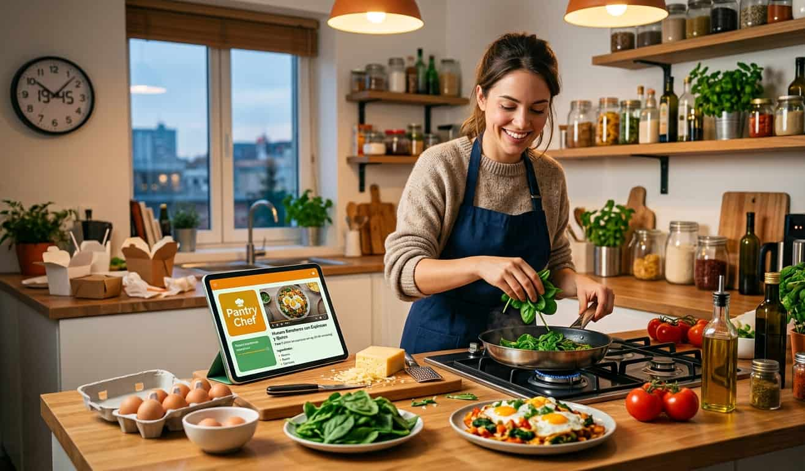
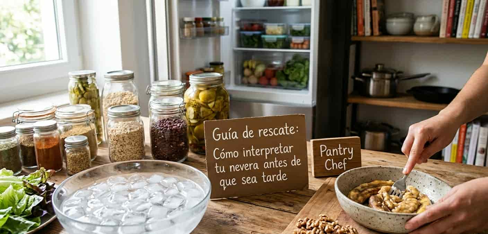
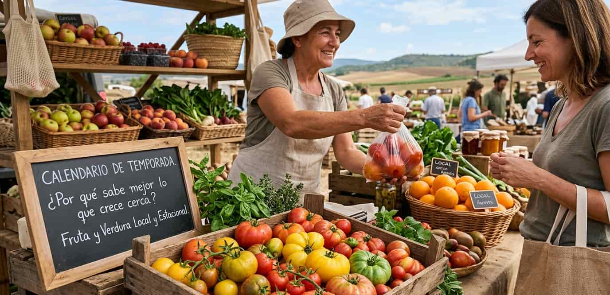
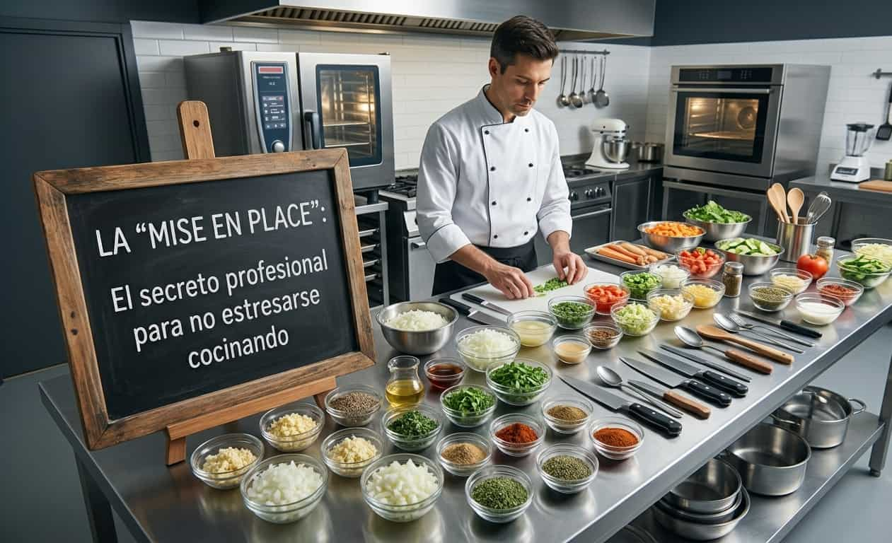

Pantry Blog
Todo lo que necesitas saber para comer mejor, desperdiciar menos y cocinar sin complicaciones.

Nutrición y estilo de vida
Sobrevivir a la semana sin morir en el intento: Cómo Pantry Chef puede salvar tu dieta
Para muchos jóvenes profesionales, el ritmo actual parece una carrera contra el reloj. Te contamos cómo romper ese ciclo.

Organización
Guía de rescate: Cómo interpretar tu nevera antes de que sea tarde
¿Sabías que gran parte de los alimentos que tiramos a la basura están, en realidad, en perfecto estado?

Sostenibilidad
El calendario de temporada: ¿Por qué sabe mejor lo que crece cerca?
A menudo nos hemos acostumbrado a encontrar tomates en diciembre y naranjas en julio, pero ¿alguna vez te has preguntado...

Recetas rápidas
La “Mise en Place”: El secreto profesional para no estresarse cocinando
Si alguna vez has sentido que la cocina es un caos de sartenes quemadas y cortes precipitados, es porque...